Префектура Фукусима · Иваки · еда
HAGI в Иваки: шеф, который знает о продуктах Фукусимы всё
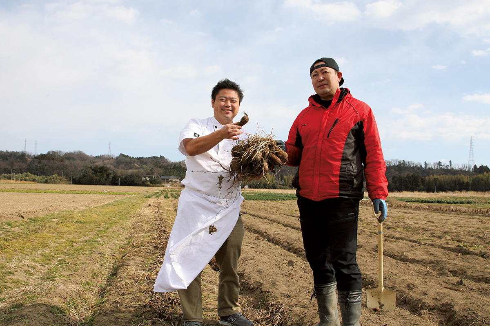
Ресторан HAGI стоит среди полей в городе Иваки, в десяти минутах езды от моря. Лучшим рестораном мира ему не стать, но о продуктах Фукусимы его шеф знает больше, чем кто-либо в префектуре.
Шеф
Ресторан, который пережил 2011 год
Шеф Харутомо Хаги всё время улыбается, но, когда разговор заходит о том дне, его лицо мрачнеет. «С того дня все пейзажи, которые я вспоминаю, чёрно-белые». Землетрясение 11 марта 2011 года ударило по всему востоку Японии, и через десять лет, в 2021 году, шеф рассказал о нём ресторанному критику.
Иваки находится на юге префектуры Фукусима. До моря отсюда десять минут на машине, вокруг тихий пейзаж: поля и разбросанные между ними дома. Здесь, рядом с родительским домом, в 2000 году Харутомо Хаги открыл «HAGI, французский ресторан». Ему было 24 года. Сам он рассказывает, что поначалу сил хватало только на то, чтобы готовить строго по учебнику кулинарного училища. К десятому году в ресторан приезжали гости из других префектур, но 2011 год изменил всё.
«Землетрясение нам почти не навредило. Гораздо тяжелее ударили слухи после аварии на атомной станции». Все брони были отменены. Шеф не знал, что делать, и много дней жил как в оцепенении.
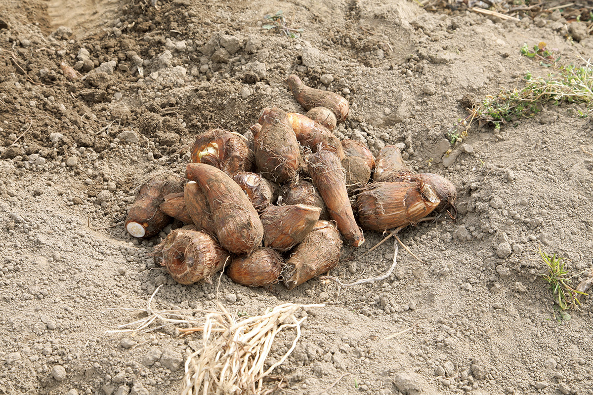
В это время его позвали на встречу местных производителей, и там он познакомился с фермером из хозяйства «Фарм Сираиси». Фермер ведёт хозяйство восьмым поколением, семья обрабатывает эту землю с периода Эдо, а с 2001 года он выращивает овощи без пестицидов и химических удобрений. Он между делом протянул шефу помидор. Шеф откусил и удивился: «У этого помидора невероятная сила вкуса». Фермер, в свою очередь, вспоминает: «Я дал шефу помидоры, а он сделал из них джем. Попробовал ложку и понял: этот повар не из простых». Так сложился союз фермера и повара.
Поле «Фарм Сираиси» местные называют «чудесным». Незадолго до землетрясения фермер словно по наитию перенёс семена «Тёбэй» в другое место. В 2019 году во время сильных дождей поле залило, как озеро, но и тогда семена хранились отдельно и уцелели.
Признание
От фермеров Фукусимы до Елисейского дворца
Шеф начал объезжать производителей по всей префектуре и завёл сайт о продуктах Фукусимы. Его заметили телевидение и журналы, и вскоре пошла молва: «О продуктах Фукусимы спрашивайте шефа Хаги». Потом пришло приглашение из Парижа: приготовить ужин из продуктов Фукусимы в Елисейском дворце, резиденции президента Франции. По словам критика, ужин высоко оценил президент Франсуа Олланд, а в Японии разошёлся рассказ о том, что Харутомо Хаги единственный японец, который готовил на этой кухне.
В 2017 году шеф возглавил объединение поваров и производителей Фукусимы, а в 2018 году готовил обед от губернатора префектуры на восьмом саммите Японии и островных государств Тихого океана. За несколько лет он стал одним из главных поваров Фукусимы.
За десять лет шеф пришёл к кухне, которая раскрывает продукт, и держаться за французскую классику шеф больше не считает нужным. Поэтому он убрал из названия слова «французский ресторан», и ресторан стал просто HAGI.
Курс
Меню решают продукты
В 2021 году в HAGI было два курса: 18 000 иен (от закусок до маленьких сладостей, 12–13 блюд) и короткий за 15 000 иен (на два-три блюда меньше и с другими продуктами, но по объёму столько же). Шефу привозят то, что в этот день как раз на пике сезона, и он думает, как лучше всего раскрыть этот вкус. На словах просто, но на кухне шеф один. Он готовится до последней минуты перед открытием и собирает каждое блюдо с нуля.
«Можно было бы всё заготовить заранее и только раскладывать по тарелкам: я ведь на кухне один. Но каждый продукт заявляет о себе, и хочется, чтобы гости попробовали его лучший вкус»
шеф ресторана
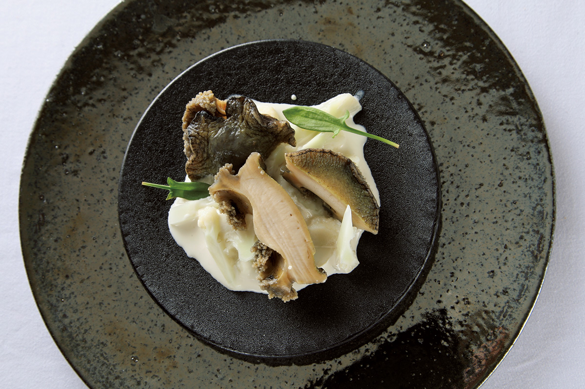
Курс открывает морское ушко из вод у побережья Дзёбан. Рыбаки научили шефа: если не приготовить моллюска в течение получаса после того, как его подняли на берег, запах моря уходит. Поэтому за продуктами шеф ездит сам и мчится обратно на кухню. Три часа на огне, и ушко становится пухлым, а вкус моря сгущается.
Следом идёт ещё одно блюдо о море: суп, похожий на тяванмуси, японский яичный крем, приготовленный на пару. В нём консоме из рыбы на родниковой воде из Иваки, которую шеф набирает сам, водоросли нори и яйца кур, которых кормят ферментированными рыбными обрезками.
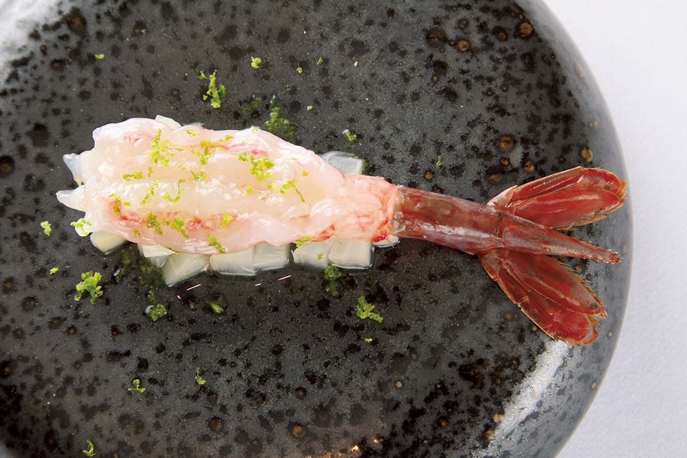
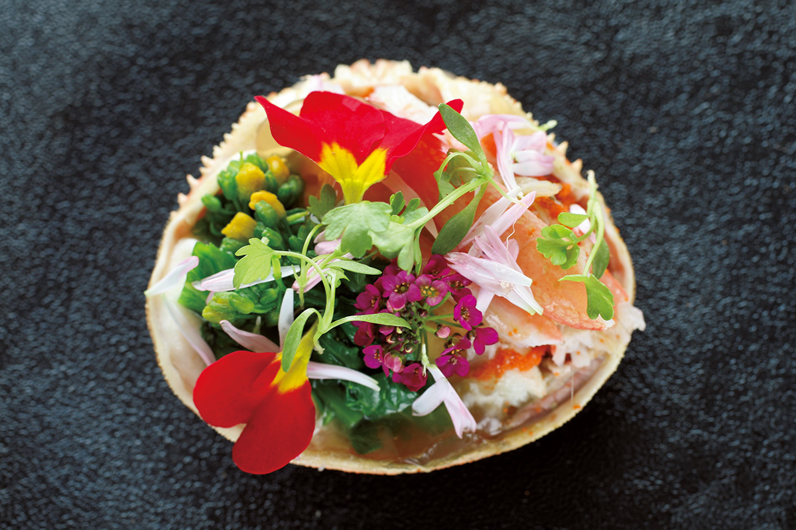
Креветку «будо-эби» называют виноградной: живая она красная, а после смерти становится фиолетовой. Снежного краба знают прежде всего по побережью Хокурику, но до 2011 года Фукусима была восьмой в Японии по его улову. Потом на тарелке появляется скумбрия из Иваки с поджаренной кожей, свежими кубиками яблока сорта фудзи и японской петрушкой сэри. Почти весь курс построен на сочетании рыбы и овощей, и фрукты здесь работают удивительно точно.
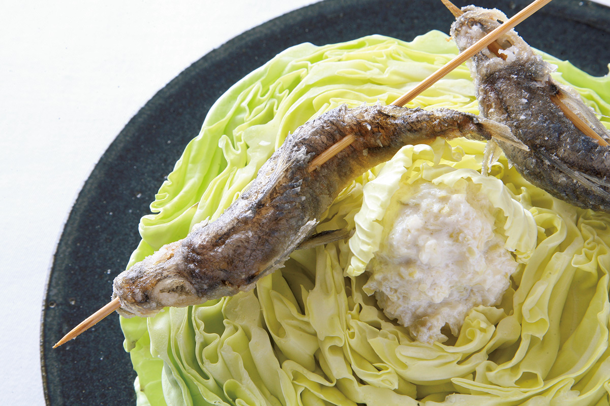
Мэхикари считается рыбой города Иваки. Шеф достаёт особенно крупных рыб, нанизывает на шпажку и жарит во фритюре. Они вкусны и сами по себе, но с соусом из ферментированных капустной кочерыжки и соевого молока неожиданно сладкие.
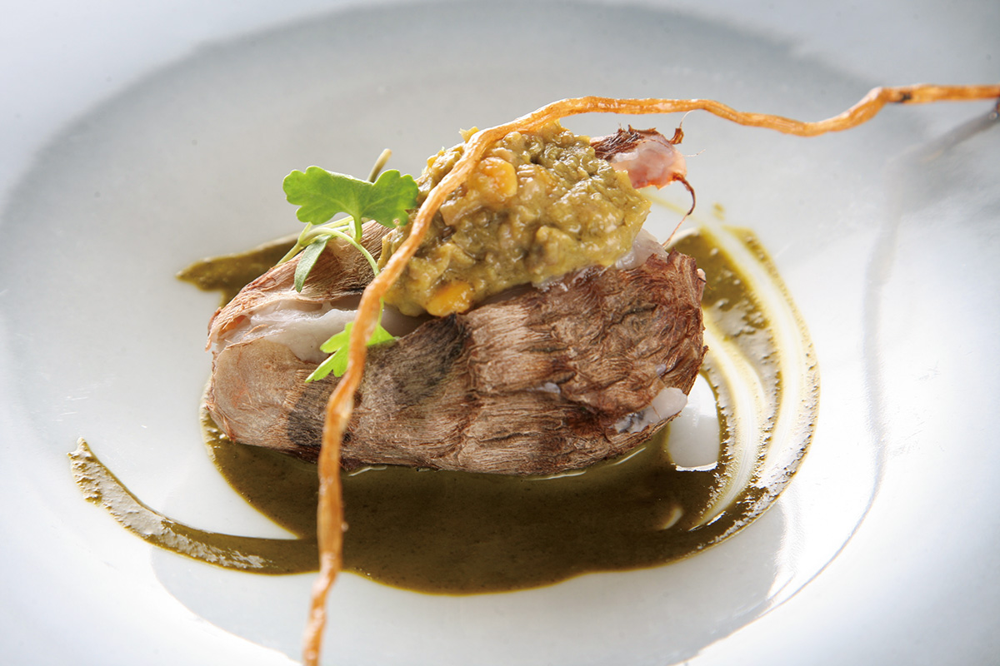
Таро «Тёбэй» мягкое, и его можно есть с кожурой, поэтому шеф готовит клубень целиком. Снизу соус из печени сайры, сверху солёное филе той же сайры. Поле и море в одном блюде.
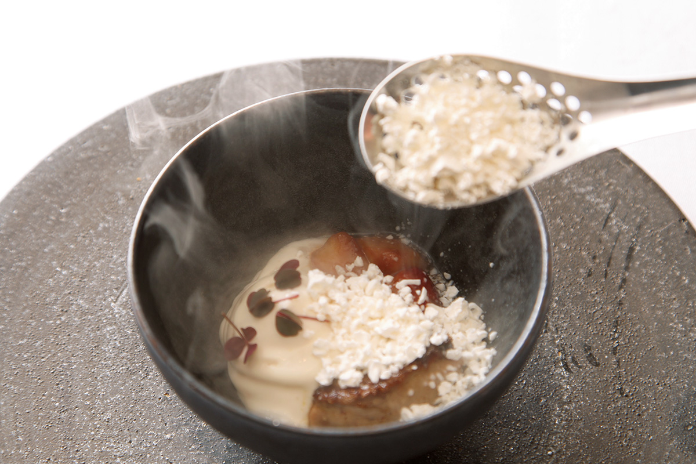
На горячую жареную фуа-гра шеф сыплет порошок из кодзи без пестицидов, замороженного жидким азотом. Пока ешь, он тает и превращается в сливочный соус со вкусом амадзакэ, сладкого рисового напитка. Тайная нотка блюда: уваренная клубника на фуа-гра. Затем на углях жарят барракуду с соусом из сакэ-риса «Камэ-но о» и ферментированных грибов: так шеф показывает, что культура сакэ может стать и частью блюда. Хлеб пекут из пшеницы Фукусимы сорта «Юкитикара», масло ферментированное, с молочной фермы, которую молодой хозяин начинал с двух джерсейских коров.
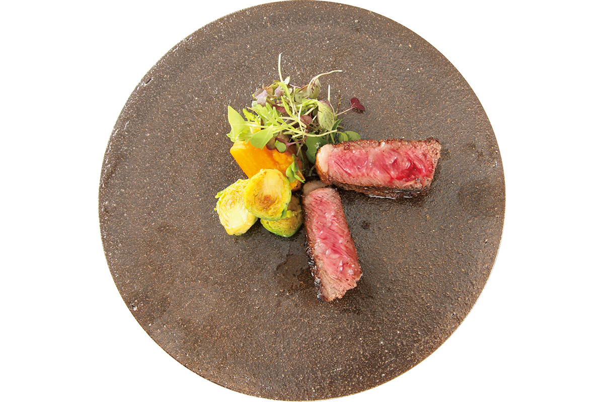
Шеф уже почти отказался от говядины, потому что не мог найти мясо по душе, но передумал, когда попробовал говядину фермы «Эму-бокудзё». «Танкоку-гю» это помесь короткорогой породы из префектуры Иватэ и японской чёрной породы вагю, марка Фукусимы: чистое постное мясо с насыщенностью вагю. На десерт идёт особенно крупная клубника с фермы Фукусимы и желе из «клубничной воды»: ягоды настаивают в очень мягкой воде из Иваки, и сок сам переходит в неё. В конце подают канеле, галеты, финансье и апельсиновые цукаты в шоколаде с кофе или травяным чаем. Шеф хочет, чтобы через месяц гость вспомнил: «Какое же было печенье».
Напитки
Тоже из Фукусимы
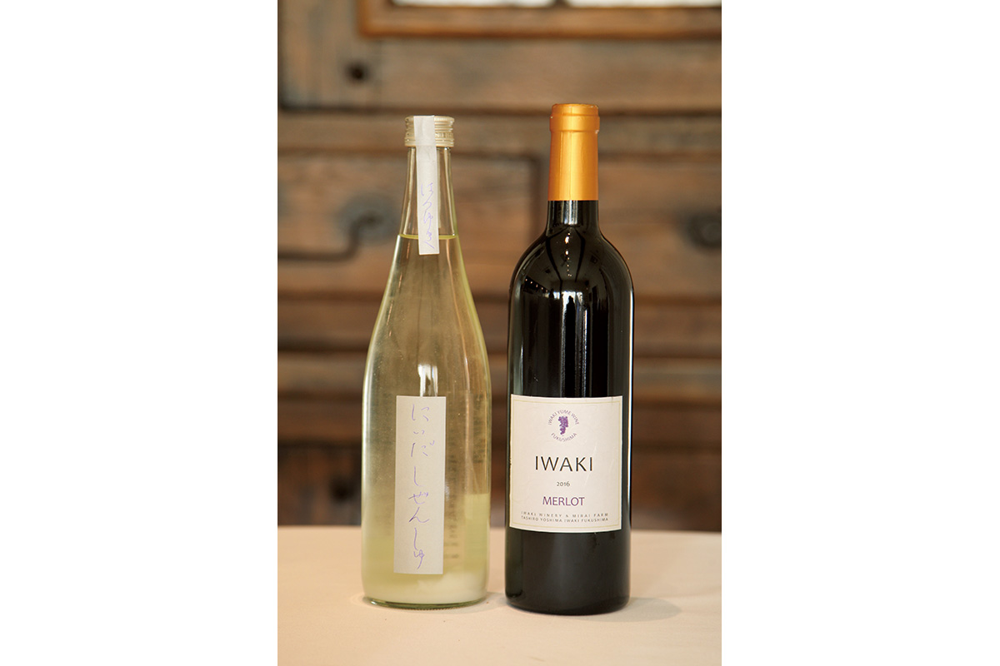
К блюдам подбирают вино и сакэ. Среди них мерло винодельни «Иваки», до которой от ресторана около 15 минут на машине, и сакэ от сакэварни «Ниида хонкэ». В 2021 году сопровождение примерно из 12 бокалов стоило 7500 иен.
Хозяева
Шеф на кухне, жена в зале
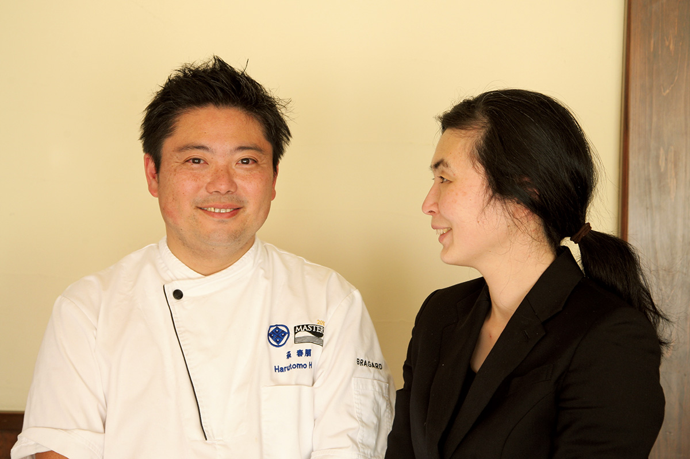
Залом занимается жена шефа. Она родом из Токио, а познакомились они на поле «Фарм Сираиси». «Она понимает продукты Фукусимы и вместе со мной рассказывает о них», говорит шеф. Она разбирается и в продуктах, и в кухне мужа, и для него это надёжная опора.
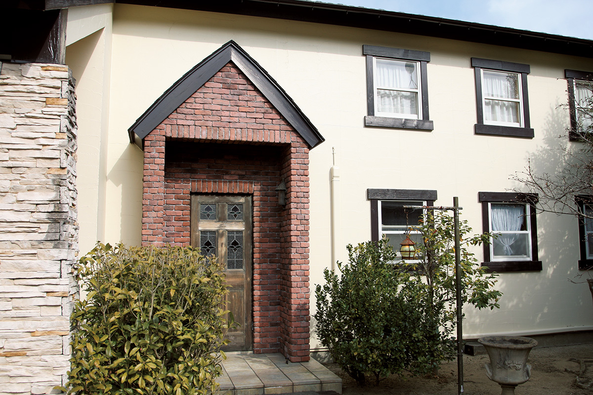
HAGI
- Адрес
- префектура Фукусима, Иваки, Утиго-Мидайсакаи-мати, Онигоэ, 171-10
- Телефон
- +81 246-26-5174
- Часы работы
- начало в 12:00 и 18:30
- Выходные
- нерегулярные
- Цены / Вход
- курсы 15 000 и 18 000 иен (в обоих около 10 блюд, продукты разные)
Фото: Мунэаки Маэда.